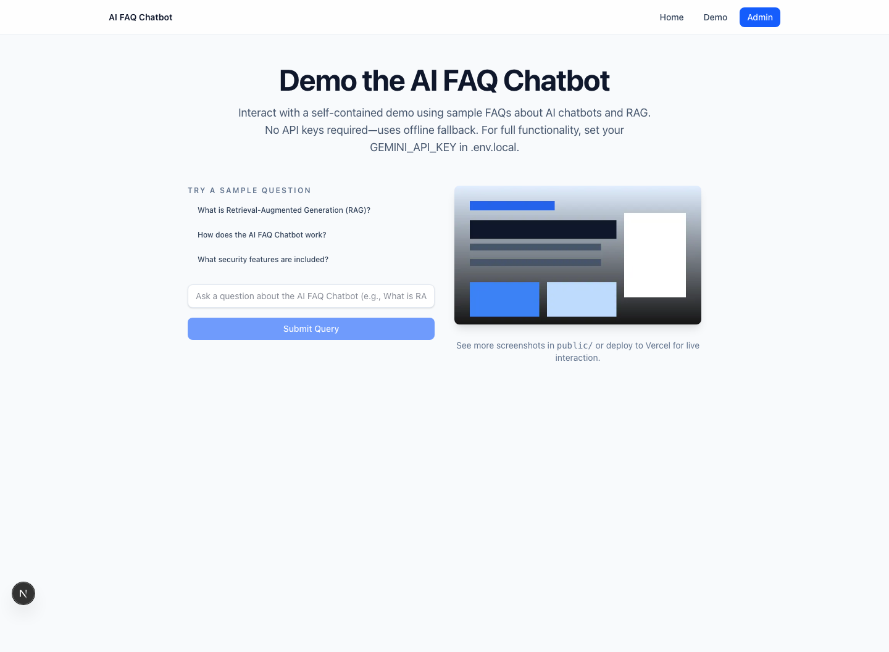

RAG
AI FAQ Chatbot
Document ingestion, evidence retrieval, grounded answers, administration, and an embeddable support widget.
8-case local evaluation: refusal correctness 1.0; p50 3.83 ms; prompt-injection forbidden terms observed 0.
Next.js / TypeScript / Gemini / Playwright